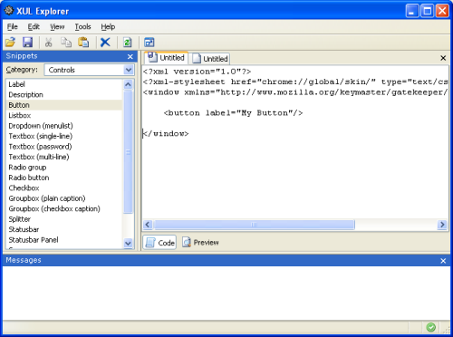
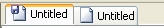

XUL Explorer

Introduction
XUL Explorer is a simple tool for experimenting with XUL snippets. Type or insert snippets into the editor and you can quickly preview the results.
A small library of XUL snippets is also included to help beginners start exploring different parts of XUL.
Basic Features
Some basic editor-type features have been implemented. Simple previewing and error reporting is also available:
- Opening and saving to files
- Edit multiple files using a tabbed editing window
- Simple printing
- Clipboard operations and Undo/Redo
- Previewing on a separate tab or in an external popup window
- Error reporting using the JavaScript Error Console (there is an error indicator in the statusbar)
- Best practices checker can scan for XUL structure problems and UI accessibility issues
The Help menu has quick links to the MDC XUL reference, XUL tutorial, and the JavaScript reference.
Editor tabs that have been modified display a special icon. XUL Explorer will prompt you to save any modified files before closing.

Preview
Previewing can be 'manual' or 'automatic' and can be set in the Options dialog. If you choose 'automatic', changes in the editor cause the preview to be updated. Be careful, since the preview may be updated before you are finished editing, resulting in an error.
Use the 'Code' and 'Preview' toggle buttons to switch between code editor and preview pane. Launch a preview in a separate window using the menu or toolbar button.
Snippets
XUL Explorer comes with a small library so XUL and JavaScript snippets. The snippets are displayed in the Snippet panel and are grouped into different categories. you can list all snippets or just those in a specific category
- Double-clicking a snippet will insert it into the editor at the current selection. If text is already selected, it will be replaced.
- The snippets are stored in a JSON formatted file. You can edit the file to add new snippets if you want.
- You can supply their own snippet file using the Options dialog. When XUL Explorer starts it will merge your snippets into the builtin snippets.
- You can also choose the default script loaded when XUL Explorer starts. Just set the snippet name in the Options dialog.
- When using File > New, you can select any snippet from the 'Templates' category (such as Window or Dialog), in addition to a blank script.
XUL Checker
The XUL Checker feature is a XUL structure check and best practice guide. It will scan the XUL in the selected editor tab and log any potential problems it finds with the XUL. The checker has the following tests:
- Basic Structure - Stuff a schema language would check:
- Is the XML well formed?
- Are any elements unknown?
- For a given element, are any attributes unknown?
- For a given element, is it the child of a valid parent?
- For a given attribute, are the values allowed?
- Best Practices - Stuff that’s recommended for a good, localizable, skinnable and accessible UI:
- Are access keys on menus, checkboxes, radiobuttons, buttons and labels linked to controls?
- Are labels linked to controls using control attribute?
- Do toolbarbuttons have labels and tooltips (even if the label is hidden)?
- Are there menu alternatives to toolbar actions (use keyset and commandset)?
- Is the context attribute used to attach context menus?
- Are toolbar, menu and button images assigned via CSS or hard coded image attributes?
- Does the source avoid using inline style?
- Are radiogroups contained in a groupbox with a caption? (not yet)
- Does the source declare a DTD for localization of string resources? (not yet)
- Are labels, captions, accesskeys and other strings pulled from a DTD? (not yet)
- Does the source import a stylesheet (exception: overlays)? (not yet)
Simple Keyword Help
Select a XUL element, right-click and pick Keyword Lookup. XUL Explorer launches the Help Browser with the appropiate MDC XUL reference page for that keyword. Currently, this only works for XUL elements, but XUL attributes could be added as well.